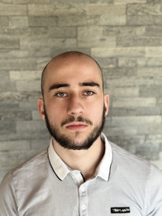
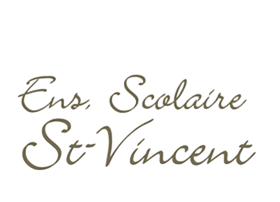
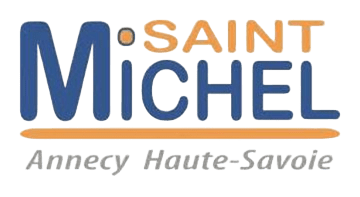
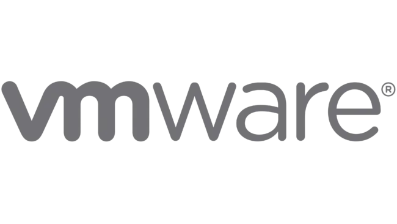

Bonjour, je suis
Evan Gourmaud
Étudiant développeur · Institut G4 · Lyon
Passionné par le développement logiciel, j'ai choisi d'interrompre mon BTS SIO pour intégrer l'Institut G4 à Lyon — un Bac+3 dédié à la maîtrise des langages, architectures et méthodologies du génie logiciel. Mon ambition : concevoir des solutions robustes et scalables.
Réseau Informatique
Bac Pro SN RISC. Configuration de routeurs, commutateurs, VLANs et protocoles de routage via Cisco Packet Tracer.
Développement Web
Cours, projets et stages m'ont permis d'acquérir les bases du front-end et une logique de programmation solide.
Formation
Mon parcours académique et professionnel.

Lycée Saint-Vincent de Paul
Collonges-sous-Salève · Bac Pro SN RISC – Réseaux Informatiques et Systèmes Communicants
2020 – 2024 · 4 ans
Lycée Saint Michel
Annecy · BTS SIO SLAM – Solutions Logicielles et Applications Métiers
2024 – 2025 · 1 anInstitut G4
Lyon · Bac+3 Informatique & Management de Projet – développement en alternance
2025 – en coursMes compétences
HTML & CSS
Bases maîtrisées de manière autodidacte et consolidées en stage. Conception d'interfaces claires et intuitives.
Python, JavaScript, C, C++
En progression constante. Entraînement régulier pour renforcer la logique algorithmique.
Hardware
À l'aise avec le montage et la maintenance de composants pour optimiser les performances machines.
Réseau Informatique
Configuration de routeurs, commutateurs, LAN et VLANs via Cisco Packet Tracer. Routage IP maîtrisé.
Mes réalisations
Projets réalisés dans le cadre de mes études et de mon apprentissage personnel.

Projet Ateliers Professionnels (AP)
Projet en équipe mettant en pratique développement, réseau et cybersécurité. Environnements virtualisés sous VMware.
Site Web – JO & Pierre de Coubertin
Site informatif sur les Jeux Olympiques. Hébergé sur AlwaysData, déployé sur VM locale via FileZilla.
Hébergement AlwaysData & VM locale
Configuration du domaine, gestion des fichiers avec FileZilla, serveur web local pour test avant mise en production.
Site Musée
Chargement…
Site web du musée avec présentation des collections et informations pratiques.
Mes hobbies
Des activités qui développent des qualités directement utiles en entreprise.
🏃 Parkour
Agilité, décision rapide. Atout : résoudre des problèmes de manière inventive.
🌊 Cliff Jumping
Dépasser ses limites. Atout : esprit d'initiative, zone de confort élastique.
🥾 Randonnée
Patience et endurance. Atout : régularité sur les projets longs.
🎵 Musique
Créativité et rythme. Atout : solutions originales et travail méthodique.
Contactez-moi
Disponible pour une alternance ou un stage. N'hésitez pas à me contacter.
M'écrire un email